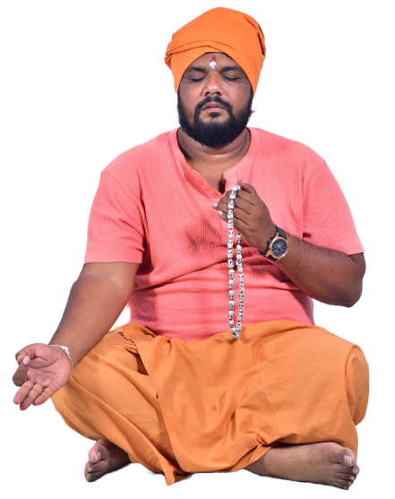
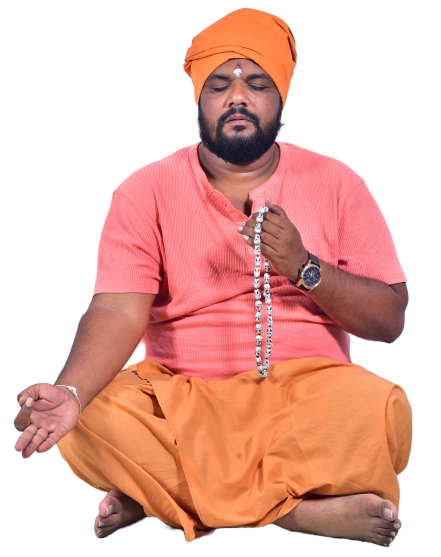
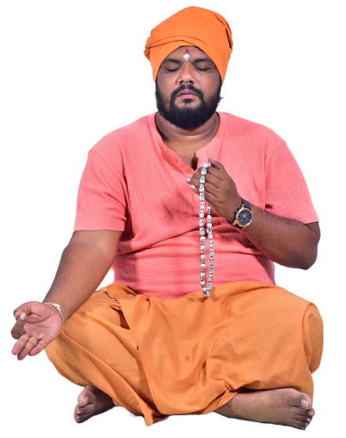

*Prashanna *Prediction *Occult

"Hello everyone, my name is Prof. M. Hari Prasad, M.A., B.Ed., Ph.D. I
live in Chennai. I am
not the
only reason for the creation of this website — we built this website as a team. None of us knew each
other beforehand, we all happened to meet at a place where we went to see a great saint. It was
because of that saint that we all united. He was the one who gave answers in a single line to our
long-pending search. Many of us had lost direction in life, and he gave a new path and helped to
make life smoother. This article is about him.
His name is Murali Mohan, but people also call him Guruji, Gurunath, or MM Ji. The reason
behind
these names will be understood when you read this article fully.
Guruji Murali Mohan was born in Hosur city on February 7, 1984, as the elder son of the couple Marappa and Rathinam. At that time, his family was very poor. Although his father owned a lorry in those days, he had two wives. Guruji Murali Mohan was the son of the first wife. Since his father mainly supported and spent for the second wife’s family, Guruji’s mother had to manage with the bare minimum for survival.
Guruji’s mother was a tailor. She would wash clothes from morning till evening and run the household with that small income. On some nights, Guruji and his mother would sit together stitching clothes. When Guruji spoke about those days in one of his videos, he said: “Even though we struggled for money, I was happy in those days. That happiness is something I never got again in my life, and I will never get it in the future either." The reason for this was that during those times, his mother suddenly became bedridden. Her hands and legs stopped working, her whole body swelled, boils appeared on her shoulders that burst and oozed water, and she could not even speak properly.
At that time, Guruji was studying in Class 2 at Sathya Sai Bala Gurukulam School in Hosur. Even though he did not receive much care from his father, he lived happily with the love and affection of his mother. Guruji has described this in many of his videos, saying: “All that happiness changed in a single night.”
His father tried several doctors and hospitals, but there was no improvement in his mother’s
condition. Days passed, months went by, a year went on, yet nothing changed. Guruji was only
six
years old at that time.
When you listen to Guruji narrating those days, your eyes fill with tears. A six-year-old
boy would
wake up every day at 5:00 a.m. and clean the whole house. Cleaning did not just mean
sweeping — he
had to pour water and wash the floors daily. The reason was that since his mother was
bedridden,
water and fluid that leaked from her wounds would drip on the floor. If not washed daily,
the house
would stink and mosquitoes and flies would swarm. So, Guruji was forced to clean the house
thoroughly every day.
After that, following his mother’s instructions from the bed, Guruji began cooking. Once the
cooking
was done, with the help of neighbors, he would carry his mother to the bathroom for her
morning
routine, bathe her, change her clothes, put her back in bed, feed her food, then eat his own
breakfast, and leave for school by 9:00 a.m.
While describing those days, Guruji said:
“I had to enter the school gate before 9:00 a.m. If I was late, they would lock the gate.
Then I
would have to wait outside for hours, and only after getting hit on the knuckles with a
scale would
they let me in. Compared to all the hard work I did at home in the morning, that beating
hurt me the
most.
About GurujiIn his childhood during school days, the lunch bell would ring at 1:00 PM. Without a moment's hesitation, Guruji would dash from school to his house. This journey was perilous, as the route was—and still is—the busy Bangalore-Dharmapuri highway, which he had to cross to get home. Despite the danger, he made the trip daily. Upon arriving, he would check if his mother(who was ill) needed to use the restroom, serve her food, eat his own lunch, and then hurry back to school. The tight schedule demanded his return within 45 minutes, when the next bell rang, making his afternoon commute a challenging and emotional ordeal. In the evening, after school, he would walk home leisurely, free from the earlier urgency, spend time conversing with his mother, and then drift off to sleep. This routine marked the start of his second year in second grade.
As his father, having exhausted medical options after consulting numerous doctors, turned to spiritual healers and mystics for help with his mother’s condition, various practitioners visited. They charged fees ranging from one thousand to twenty thousand rupees, yet her health remained unchanged. Each mystic attributed her ailment to black magic or a curse. Guruji witnessed this struggle closely. Since his parents had a love marriage, they lacked family support, though some relatives began visiting after noticing his mother’s deteriorating state. One relative proposed, “How much longer can we wait? Years have gone by. It’s time to consult a doctor and administer a lethal injection to end her suffering.” This suggestion sparked a heated exchange, with Guruji retorting, “You never bothered to check on us or show concern. What gives you the right to interfere? I’m the one caring for my mother, and I’ll do so until the end. No one needs to visit or meddle in our affairs,” he declared with frustration
Days passed by, and as Guruji recounted his mother’s condition, he shared, "Saliva flowed continuously from my mother’s mouth, yet she lacked the strength to rise and expel it. They would place a coconut shell filled with sand beside her, where she would spit throughout the day from morning until night. Her hands and feet swelled severely, and she wept endlessly from the excruciating pain. Witnessing this, Guruji felt lost and shed tears of helplessness." During this period, Guruji’s father sought help from a mystic from Kaveripattinam in the Krishnagiri district. Guruji remembers this mystic arriving in a striking Ambassador car, a rarity back then. Upon seeing him, Guruji’s initial thought was, "Numerous individuals have deceived my father and taken his money; this man is likely another one," and he regarded him with distrust. That night, certain rituals were conducted. Amid the proceedings, the mystic abruptly raised his voice and gestured toward a location near the house.
They began excavating the spot, and his accompanying disciples dug until water emerged. Eventually, they uncovered a doll bound with wires. The areas where the doll was tied corresponded to the places where Guruji’s mother felt pain. To verify this, the mystic took a needle and pricked the doll; each puncture caused Guruji’s mother to twist in pain, overwhelmed by the sensation. The ceremonies persisted, and by around 3 a.m., Guruji’s mother rested on a cot. As was his habit, Guruji lay beside her. Though skeptical of the rituals, he drifted off to sleep next to her as they continued. When he awoke the next morning, he noticed a woman standing nearby. With her back turned, her identity was unclear. Rubbing the sleep from his eyes, he peered closely. Guruji later recalled, "The figure was my mother. The mystic had performed a ritual that enabled her to stand. He chanted mantras while over twenty people sat nearby. After two years of seeing her confined to bed, her standing there was a moment of pure joy. I barely registered the others; I rushed to her, embraced her from behind, and wept, calling out ‘Mother.’ That day remains etched in my mind, unforgettable." Following this, the mystic successfully removed the black magic afflicting Guruji’s mother. From then on, Guruji felt a deep urge to master this craft and aid others facing similar hardships.
Time moved forward, and Guruji completed his ITI education. He later joined a local TV channel in Hosur, starting as a cameraman before transitioning to a commentator role, hosting various programs. His career advanced, leading to the opportunity to produce and host his own show, "The Third Eye," which focused on documenting supernatural occurrences. The channel entrusted him with this task, exposing him to numerous mystics and spiritual leaders. He engaged with hundreds of them and eventually launched his own local TV channel, deepening his connections with these figures. He filmed rituals, including cremation ground ceremonies, gaining insight into such practices. His childhood curiosity to learn this art found fulfillment as he studied under mystics, priests, aghoris, fortune-tellers, and other experts. His father also thrived financially, eliminating their monetary struggles, while Guruji prospered through his own ventures, lifting them out of poverty. However, the Tamil Nadu government later mandated that local TV channels pay a 5 lakh rupee deposit and monthly rent. Recognizing the channel’s insufficient revenue, Guruji decided to shut it down.
At Guruji, every seeker walks a unique path guided by divine wisdom. Our devotees’ heartfelt experiences reflect the peace, clarity, and blessings they’ve received through Guruji’s guidance. Here's what they have to say about their spiritual journey with us
Asha told Guruji everything that had happened. Guruji responded, "I know some people; I’ll
give you their addresses, go and meet them." But Asha, crying, said, "My father won’t
believe in all this, A Miraculous Beginning: Guruji dispelling an Evil Entity from a
Distressed Household: Asha and her father were the only ones living in their house after her
mother and sister had committed suicide. One day, while Asha was cooking in the kitchen, her
father, who was lying in the bedroom, suddenly screamed, "Leave me alone, don’t do anything
to me!" Hearing this, Asha ran to him, asking, "What happened, what happened?" He brushed it
off, saying, "Nothing, dear," and left the house. Having already lost her mother and sister,
Asha, in grief and anger, shouted, "Who’s in this house? Why are you doing this to my
father? You killed my mother and sister, and now you’re doing something to my father. Who
are you?" Challenging whatever presence was there, she said, "If you’re brave enough, do
something to me instead of targeting my father!" She sat on the bed, and suddenly, she felt
as if someone pushed her. She fell off the bed, and something seemed to sit on her and slap
her across the face. That slap was the last thing she remembered. It was only after Guruji
placed his hand on her forehead and chanted some mantras to expel something from her body
that she regained consciousness.
Asha told Guruji everything that had happened. Guruji responded, "I know some people; I’ll
give you their addresses, go and meet them." But Asha, crying, said, "My father won’t
believe in all this, nor will he pay for it. What should I do?" With no other option, Guruji
told Asha, "Alright, tell me when your father goes to work at night. I’ll come and perform
the rituals." Three days later, as planned, Asha’s father went to his night job. That night,
Guruji made all the necessary arrangements for the ritual. For three hours, in the presence
of Asha and Guruji’s wife, he spoke with the spirit and expelled it from the house. Both
Guruji’s wife and Asha, witnessing such an event for the first time, were stunned. Asha
later said, "I had only seen Murali Anna as a politician, a businessman, and a hot-tempered
person. That night, watching the ritual in my house, my sister (Guruji’s wife) and I were
amazed. I never imagined he had such power and knowledge."
However, Asha shared the incident with her relatives, who then approached Guruji. With no choice, Guruji began reading their fortunes, and they told others. Soon, at least 20 people started visiting him daily. His house was small, and unable to turn away the visitors, Guruji took loans and pawned his wife’s jewelry to build a small ashram. Many people started visiting the ashram, and Guruji decided to teach this art to others so they could benefit from it. He began conducting classes and, to date, has taught this mystical art to over 2,500 disciples. Guruji has disciples across the world in various countries, and we take pride in being among them. However, even today, Guruji has not created any social media presence for himself. Only when people like us do something for him does it happen; otherwise, he doesn’t take the initiative himself. He has no interest in such things and says, "Let people come to me when they know about me. I’ll help those who come. It’s up to God to decide who should meet me and when. It’s not my job to advertise and attract people; I didn’t come here for that."
As Guruji was leaving the house, he told Asha one thing: "Please don’t tell anyone that I did this. I performed this ritual because I saw you crying and had no other choice. I will definitely do this for people one day, but that will be when I’m 60 years old. Until then, don’t tell anyone." If Asha had listened to those words, this website might not have been created.
Even today, he remains a prominent businessman, engaged in real estate, construction, import, and export businesses. Yet, he continues to serve people through these rituals twice a month. From what I’ve seen, he is a genuine person. For years, we wandered from place to place, spending money to learn mysticism, spirituality, fortune-telling, and astrology, struggling to find a true guru. Guruji appeared like a divine light to guide us. Guruji Murali Mohan has received initiation from 62 gurus. It was only after he explained that we learned about the concept of initiation. Similarly, one of his disciples started a YouTube channel for him, which became the first YouTube channel for mysticism and spirituality. Others followed suit after seeing it. The king of the mystical world, Guruji has completed a PhD in fields like fortune-telling and astrology and holds many degrees. I’ve personally seen prominent mystics and politicians consult him for astrology readings. Once you approach him with a problem, you don’t need to search elsewhere for a solution. To date, he has healed hundreds of women affected by mystical ailments causing paralysis. Getting an appointment with him today is extremely difficult. With the hope that everyone may receive the blessings and grace of such a great soul, this website has been created.
Transform uncertainty into confidence with trusted astrology, vaastu, and spiritual healing guiding you toward peace, purpose, and prosperity.

Become a member to deepen your spiritual journey with exclusive access to events, workshops, and personalized guidance from Guruji.